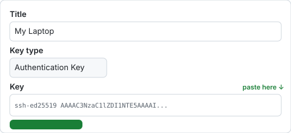

What is GitHub? It's a free website where your project files are stored safely online. It's like a backup that also lets you publish your website for the world to see. Millions of people use it — it's the standard.
- Free backup — your work is saved online, even if something happens to your computer
- Free hosting — you can publish your website for the world to see at yourname.github.io
- Easy sharing — send anyone a link to see your code or your site
This takes about 5 minutes. You can also come back and do this later.
Step 1 — Create a free account
Go to github.com/signup
Enter your email address
Use any email you have. You can change it later.
Create a password
Choose a username
This will be part of your website's free address (like yourname.github.io). Pick something short and simple.
Complete the verification puzzle and click "Create account"
Check your email for a verification code and enter it
That's it — you have a GitHub account!
Step 2 — Connect your computer to GitHub
When the setup script ran, it created a special "key" on your computer. This key lets your computer talk to GitHub securely — like a digital ID card. Now we need to tell GitHub about it.
ssh-ed25519 followed by random letters and numbers. If you closed that window, don't worry — follow the instructions below to find it again.
Find your key
Add it to GitHub
Go to github.com/settings/ssh/new
This is GitHub's "SSH keys" settings page. You may need to log in first.
In the "Title" field, type a name for your computer (e.g., "My Laptop" or "Home PC")
This is just a label so you can remember which computer this key belongs to.
In the "Key" field, paste the key you copied above
It should start with ssh-ed25519 followed by a long string of letters and numbers.

Click the green "Add SSH key" button
GitHub may ask you to confirm your password — enter it and confirm.
Done! Your computer is now connected to GitHub. The AI coding tool will be able to save your work and publish your website automatically.
All set!
Go back to your AI chat and tell it:
I set up GitHub and added my SSH key. What's next?